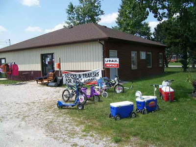
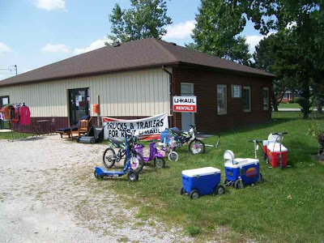

Summer is almost over; fall is almost here. The LaRue Pool did not open on Sunday because it was too cold and is now closed for the year. School has been in session for a week or two, depending on the school. And football season has begun. I watched a bit of the SJC game on Saturday. The games are more fun to watch when the home team is winning.
I missed the half time program. The SJC band is very good, and I saw two baton twirlers practicing last week, so I am wondering what their halftime show looks like.
Have you noticed that the days are getting a lot shorter and that every evening the sun sets a bit further to the south?

This blog reports events and interesting tidbits from Rensselaer, Indiana and the surrounding area.
Monday, August 31, 2009
Sunday, August 30, 2009
Going to church in Mt Ayr I
, n(I thought it would be interesting to use Sundays to focus on Rensselaer's churches and to see how many Sundays I can go before I run out of material. Indiana is richly endowed with religious denominations, with influences from North and South, East and West. This is part of that series of posts.)
The Mount Ayr Apostolic Faith Assembly is located at about 8 miles west of Rensselaer in Mt Ayr at 215 N Second St. According to the "Church Services Directory" in the Rensselaer Republican, the pastor is Michael James. Sunday Services are at 2 p.m. and Wednesday Bible study is at 7:30 p.m.
I could not find a web site for this church or any additional information on the Internet.
The Mount Ayr Apostolic Faith Assembly is located at about 8 miles west of Rensselaer in Mt Ayr at 215 N Second St. According to the "Church Services Directory" in the Rensselaer Republican, the pastor is Michael James. Sunday Services are at 2 p.m. and Wednesday Bible study is at 7:30 p.m.
I could not find a web site for this church or any additional information on the Internet.
Saturday, August 29, 2009
Well house number 7
I have posted quite a bit on the new city well, well number 7, north of John Deere Road. (For example, here and here.) After finishing the laying of the water main along Matheson, workers got busy building the well house. I took the picture below on July 26.
Here is a closer look at the well head.
By August 1 the walls were up.
On August 6 the workers were constructing a roof.
By August 11 the roof was complete and the well head looked completely different.
By the 18th the building was complete, with a door so curious people like me could no longer see what was going on inside.
Work has continued since then. I suppose there are many steps left before they can add the water from this well to our city water supply.
Here is a closer look at the well head.
By August 1 the walls were up.
On August 6 the workers were constructing a roof.
By August 11 the roof was complete and the well head looked completely different.
By the 18th the building was complete, with a door so curious people like me could no longer see what was going on inside.
Work has continued since then. I suppose there are many steps left before they can add the water from this well to our city water supply.
Friday, August 28, 2009
THE NATIONAL PARKS: My Parks
Desert Survivor has almost 90. I may have missed one or two, but I cannot get to half of what she has.
Remington's Old Water Tank
I got a chance to stop in Remington a week ago and took a bunch of pictures. Naturally, I took pictures of their old water tower, which is on the National Register of Historic Places and also has one of the Indiana State Historical Markers. Below is the watertower viewed from the small downtown area of Remington.
Here is a closer view. The water tower is no longer in use.
I took a picture of the historical marker, and when I got home I realized that I only had the back side. I found a picture of the front side on the Internet. The entire plaque reads:
And old windowsill is showing its age as the limestone deteriorates.
Looking up from the base, you can a stairs that emerges from the tower and an old bell.
If you stand by the base and look up when the clouds are moving, the tower seems to be falling.
It is nice that Remington was able to preserve this unusual old building. It gives the town some character.
Here is a closer view. The water tower is no longer in use.
I took a picture of the historical marker, and when I got home I realized that I only had the back side. I found a picture of the front side on the Internet. The entire plaque reads:
Side one:Above the door to the water tower is the old plaque that was installed when it was built. It reads:
Built 1897 by Challenge Wind and Feed Mill Company of Batavia, Illinois. Rare tower and wood tank structure is an original example of nineteenth century public water utility facility, construction methods, and technology. Tower has limestone foundation, is 104 feet tall and approximately 20 feet in diameter, with two-foot thick brick walls.
Side two:
Original 1897 tank replaced 1924 by Challenge; 66, 000 gallon tank is made of horizontally curved cypress battens held in place by metal binder rings. Additions made to structure, which has housed various governmental services. Awarded American Water Works Association's Water Landmark Award 1986. Listed in National Register of Historic Places 2003.
Remington Indiana Waterworks 1897 Town Board J. Allman, Pres. I.W. Yeoman, Clerk
Aldermen O.P. Tabor W. Shepard C. T. Denham M.J. Phelps
Built by Challenge Wind Mill & Feed Mill Co Batavia, Ill.
And old windowsill is showing its age as the limestone deteriorates.
Looking up from the base, you can a stairs that emerges from the tower and an old bell.
If you stand by the base and look up when the clouds are moving, the tower seems to be falling.
It is nice that Remington was able to preserve this unusual old building. It gives the town some character.
Thursday, August 27, 2009
A couple of small construction projects
I tend to take pictures whenever I see construction. This summer after the hospital opened its new building, it added another parking lot behind the main building. I had the picture below in an earlier post.
I did not have this one showing the cement trucks pouring the curbs.Last time I looked, the lot was being used, though the lights were still not installed. With new building and the new parking lots and retention ponds, there is very little lawn left for the hospital to mow.
 Another bit of construction I saw I never did understand. In July workers from Jacobs Professional Services tore up the concrete over one of the fuel tanks.
Another bit of construction I saw I never did understand. In July workers from Jacobs Professional Services tore up the concrete over one of the fuel tanks.
I thought that they might remove a tank but they did not. All they seemed to do was install something in the pipes that go into the tanks.
And then they poured a new batch of concrete to cover the tanks again.
A few days later there was little evidence that anything had happened.
Meanwhile, college classes have begun and my time for posting has become quite limited.
I did not have this one showing the cement trucks pouring the curbs.Last time I looked, the lot was being used, though the lights were still not installed. With new building and the new parking lots and retention ponds, there is very little lawn left for the hospital to mow.
Another bit of construction I saw I never did understand. In July workers from Jacobs Professional Services tore up the concrete over one of the fuel tanks.I thought that they might remove a tank but they did not. All they seemed to do was install something in the pipes that go into the tanks.
And then they poured a new batch of concrete to cover the tanks again.
A few days later there was little evidence that anything had happened.
Meanwhile, college classes have begun and my time for posting has become quite limited.
Wednesday, August 26, 2009
The high school wetland
A few years ago, to the dismay of some citizens, the high school established a small area that was planted with wild prairie seeds. Today the prairie has grown up and there are trails through it. (The cross country coach has tried to route the cross country course through it to make the course a bit more interesting--most runners found the old course very boring. And now the old course does not work because a new softball field sits on the old route.) The most distinctive feature of the area is a windmill, which turns in the wind but no longer pumps water because a storm broke a linkage.
If you enjoy wild flowers, late summer is a good time to take a stroll through this area. I found a lot of partridge peas. I recognized them because of a nature walk I took at the Fisher Oak Preserve.
I had to get out my field guide to wildflowers to help me with most of the other things I found. I think these are purple coneflowers. They may be more common in gardens than in the wild.
And these seem to be yellow coneflowers, sometimes called gray-headed coneflowers or droopy coneflowers. It is also widely grown in flower gardens.
I only saw one compass plant, a tall sunflower-like plant that was just getting ready to bloom. The leaves that resemble bracken ferns make it easy to identify. I have seen some along area country roads. It is somewhat similar to prairie dock, which is common along Matheson Street, but seems to be absent in the high school prairie.
There are several other yellow, daisy-like flowers blooming. I am not sure what the one below is. It might be tall coreoposis. The white flowers are wild carrot or Queen Anne's lace, an invasive species that they probably do not want in their area.
There were quite a few of the yellow flowers shown below blooming in the prairie area, but even more of them east of the football field in the ditch. I think they are common evening primrose, but they may be a closely related species instead. The whole flower is the same shade of yellow, which makes them hard to photograph up close.
Also growing near the ditch was a bit of jimsonweed. I know this one because when I had gardens out at St. Joe's, it was a common weed that I struggled to control. When they sprout, they look like sprouting tomatoes. The plants grow fast and get big. The seeds are poisonous, but in small doses are hallucinogenic. News reports of kids dying or being admitted to hospitals for trying to use them for a cheap high are not uncommon in the fall.
If you see any mistakes in my identifications, or have more information on these plants, feel free to use the comments.
Rensselaer has a number of areas that are park substitutes, places that are open to the public and have some kind of recreational use. Examples include the court house lawn, Weston Cemetery, the reflecting pond at St. Joseph's, and the playgrounds at Monnett and VanRensselaer. This little bit of wilderness is another that is probably not well known or appreciated.
If you enjoy wild flowers, late summer is a good time to take a stroll through this area. I found a lot of partridge peas. I recognized them because of a nature walk I took at the Fisher Oak Preserve.
I had to get out my field guide to wildflowers to help me with most of the other things I found. I think these are purple coneflowers. They may be more common in gardens than in the wild.
And these seem to be yellow coneflowers, sometimes called gray-headed coneflowers or droopy coneflowers. It is also widely grown in flower gardens.
I only saw one compass plant, a tall sunflower-like plant that was just getting ready to bloom. The leaves that resemble bracken ferns make it easy to identify. I have seen some along area country roads. It is somewhat similar to prairie dock, which is common along Matheson Street, but seems to be absent in the high school prairie.
There are several other yellow, daisy-like flowers blooming. I am not sure what the one below is. It might be tall coreoposis. The white flowers are wild carrot or Queen Anne's lace, an invasive species that they probably do not want in their area.
There were quite a few of the yellow flowers shown below blooming in the prairie area, but even more of them east of the football field in the ditch. I think they are common evening primrose, but they may be a closely related species instead. The whole flower is the same shade of yellow, which makes them hard to photograph up close.
Also growing near the ditch was a bit of jimsonweed. I know this one because when I had gardens out at St. Joe's, it was a common weed that I struggled to control. When they sprout, they look like sprouting tomatoes. The plants grow fast and get big. The seeds are poisonous, but in small doses are hallucinogenic. News reports of kids dying or being admitted to hospitals for trying to use them for a cheap high are not uncommon in the fall.
If you see any mistakes in my identifications, or have more information on these plants, feel free to use the comments.
Rensselaer has a number of areas that are park substitutes, places that are open to the public and have some kind of recreational use. Examples include the court house lawn, Weston Cemetery, the reflecting pond at St. Joseph's, and the playgrounds at Monnett and VanRensselaer. This little bit of wilderness is another that is probably not well known or appreciated.
Tuesday, August 25, 2009
Shopping at the Bargain Barn
A few weeks ago I stopped in at the Bargain Barn. My son was looking for a bed frame and had been unsuccessful at Jasper Junction, so we decided to give the Bargain Barn a try.
They had a new sign in front that had not been there the last time I was by. The day was nice, so they had a variety of items outside.
One of the niches they fill is that they give Rensselaer a U-Haul outlet.
We went inside and looked around and actually did find a bed frame, which my son bought. There were lots of other things as well, including some toys shown in the picture below. Of course, they may no longer be there. As a liquidation outlet, their merchandise is ever changing.
The amount of display space is limited. I asked the source of their merchandise and was told much of it comes from contacts made on the Internet. There is a learning curve in figuring out how to do this. In this picture you can see more toys and some clothing.
The people were very friendly. I am not quite sure what to make of the business, though. I do not think the location is a good one--it is too far from the center of Rensselaer. The other problem a store like this has is that it does not have a stable group of items for sale. One week you might be able to buy a bed frame, and the next week not. Normally when you need something, you think of a place or two that is likely to carry that item and go there. Bargain Barn is not going to be one of those places. On the other hand, the fact that it has an ever changing assortment of things may attract people who otherwise would never go there. It should have the same appeal as an auction barn or a resale shop, with the difference that almost everything they carry is new merchandise. All of these places are fun places for those who enjoy shopping adventures.
 When you are out that way, stop by and see what the Bargain Barn has.
When you are out that way, stop by and see what the Bargain Barn has.
PS: The best liquidation store I have ever been to was in Hot Springs, SD. One of my kids worked at Wind Cave National Park for a summer, and we visited Hot Springs as part of our vacation to see him. They had a weird assortment of strange things at very good prices. They also had quite a bit of food for sale. I wonder if the Bargain Barn will ever consider that as a possibility.
They had a new sign in front that had not been there the last time I was by. The day was nice, so they had a variety of items outside.
One of the niches they fill is that they give Rensselaer a U-Haul outlet.
We went inside and looked around and actually did find a bed frame, which my son bought. There were lots of other things as well, including some toys shown in the picture below. Of course, they may no longer be there. As a liquidation outlet, their merchandise is ever changing.
The amount of display space is limited. I asked the source of their merchandise and was told much of it comes from contacts made on the Internet. There is a learning curve in figuring out how to do this. In this picture you can see more toys and some clothing.
The people were very friendly. I am not quite sure what to make of the business, though. I do not think the location is a good one--it is too far from the center of Rensselaer. The other problem a store like this has is that it does not have a stable group of items for sale. One week you might be able to buy a bed frame, and the next week not. Normally when you need something, you think of a place or two that is likely to carry that item and go there. Bargain Barn is not going to be one of those places. On the other hand, the fact that it has an ever changing assortment of things may attract people who otherwise would never go there. It should have the same appeal as an auction barn or a resale shop, with the difference that almost everything they carry is new merchandise. All of these places are fun places for those who enjoy shopping adventures.
When you are out that way, stop by and see what the Bargain Barn has.PS: The best liquidation store I have ever been to was in Hot Springs, SD. One of my kids worked at Wind Cave National Park for a summer, and we visited Hot Springs as part of our vacation to see him. They had a weird assortment of strange things at very good prices. They also had quite a bit of food for sale. I wonder if the Bargain Barn will ever consider that as a possibility.
Monday, August 24, 2009
Rensselaer's wind farm
I found a wind farm of sorts just a few miles from Rensselaer. Drive out Bunkum Road and shortly before you get to the overpass for the interstate, you will see a collection of old windmills. I count eight in this picture, but in another from a different angle, I could count nine.
I wish the construction of the big wind farms were closer, because if we were, I would be taking pictures almost every day. Here is one that I took from the interstate on the day I had a dental appointment in Lafayette. This wind farm is west of Brookston, and I took the picture from I-65. I wanted to take SR 43 up through Brookston and then take highway 18 over to the interstate, which would have taken me through the towers, but the exit ramp for SR43 was closed. If it had been open, I would have gotten a lot more pictures.
I wish the construction of the big wind farms were closer, because if we were, I would be taking pictures almost every day. Here is one that I took from the interstate on the day I had a dental appointment in Lafayette. This wind farm is west of Brookston, and I took the picture from I-65. I wanted to take SR 43 up through Brookston and then take highway 18 over to the interstate, which would have taken me through the towers, but the exit ramp for SR43 was closed. If it had been open, I would have gotten a lot more pictures.
Sunday, August 23, 2009
The nuns of the Holy Family Academy
Recently a car problem gave me an opportunity to pass by Beaverville, site of a grotto and an impressively large and beautiful church. On the way back from Onarga where I dropped off a son to pick up his repaired car, I stopped to take a closer look at the grounds around St. Mary's Catholic Church.
On my last visit I had noticed a large cemetery behind the church, but did not have time to look at it. On this visit I did. I was impressed with its size. The number of graves seems large relative to the size of Beaverville. Most of them have French names, as you would expect from this history of the town, which was established by French settlers in 1843.
There was a clear contrast between the older gravestones and the newer ones. You can see newer, simple grave markers above, and the older, taller markers below.
 I thought this marker unusual enough to photograph. What I found most interesting, though, were more than 40 small markers in two rows at the front of the cemetery.
I thought this marker unusual enough to photograph. What I found most interesting, though, were more than 40 small markers in two rows at the front of the cemetery.
Below is a view with the back of the church visible. They were the graves of nuns who had staffed the Holy Family Academy for its many years.
Below is a close up one one. This woman died when she was only 36. I think the top name is here professed name, and the bottom name is her birth name.
Not in the cemetery, but near the main street of Beaverville is a marker for the school. It reads, "Holy Family Academy 1895-1969 Servants of the Holy Heart of Mary." The phrase after the date is the name of the religious order to which the nuns belonged.
Remnants of the sidewalks and foundations of the school, which was demolished in 1976-7, are still visible. A small gazebo is visible in the background.
I wonder if it was part of the school complex.
Maybe I could find out if I went to the 13th annual Founders' Day celebration at St. Mary's on September 13, 2009. It is a fund-raising event for the restoration of the church. In addition to a Mass in the church at 10, it includes:
To get to Beaverville from Rensselaer, go west on SR 114. When it ends at U.S. 41, keep going straight, through Morocco, past Willow Slough, and across the Illinois state line. Just keep following the same road, even when it takes a turn to the north for a few hundred yards. Eventually it will end in Beaverville.
On my last visit I had noticed a large cemetery behind the church, but did not have time to look at it. On this visit I did. I was impressed with its size. The number of graves seems large relative to the size of Beaverville. Most of them have French names, as you would expect from this history of the town, which was established by French settlers in 1843.
There was a clear contrast between the older gravestones and the newer ones. You can see newer, simple grave markers above, and the older, taller markers below.
I thought this marker unusual enough to photograph. What I found most interesting, though, were more than 40 small markers in two rows at the front of the cemetery.Below is a view with the back of the church visible. They were the graves of nuns who had staffed the Holy Family Academy for its many years.
Below is a close up one one. This woman died when she was only 36. I think the top name is here professed name, and the bottom name is her birth name.
Not in the cemetery, but near the main street of Beaverville is a marker for the school. It reads, "Holy Family Academy 1895-1969 Servants of the Holy Heart of Mary." The phrase after the date is the name of the religious order to which the nuns belonged.
Remnants of the sidewalks and foundations of the school, which was demolished in 1976-7, are still visible. A small gazebo is visible in the background.
I wonder if it was part of the school complex.
Maybe I could find out if I went to the 13th annual Founders' Day celebration at St. Mary's on September 13, 2009. It is a fund-raising event for the restoration of the church. In addition to a Mass in the church at 10, it includes:
9:00-9:45 coffee and rolls in the parish hallWe are approaching the centennial of laying of the cornerstone of the church. The cornerstone was laid August 29, 1909.
10:00 car show, craft fair, farmers' market & flea market
11:00 kiddie barrel rides
11:00-3:00 pork chop/chicken dinner $10
noon bingo
1:00 bean bag tournament and kiddie tractor pull
1:30 church tour
2:30 entertainment in the church featuring cast members of County Theatre Workshop's summer production of "Some Enchanted Evening" and St. Mary's Souls of Harmony
To get to Beaverville from Rensselaer, go west on SR 114. When it ends at U.S. 41, keep going straight, through Morocco, past Willow Slough, and across the Illinois state line. Just keep following the same road, even when it takes a turn to the north for a few hundred yards. Eventually it will end in Beaverville.
Saturday, August 22, 2009
A quick visit to Mt Ayr
An unexpected trip took me west to Illinois recently, and on the way home I decided to take a slight detour and visit Mt Ayr. I had discussed Mt. Ayr at a dinner this summer, and that discussion was one of the reasons I thought it would be fun to visit. I also wanted to take pictures of the two churches in town for upcoming Sunday posts.
On the south side or the town it the community center. I think I was told that this was the former site of the Coach Lite Inn.
The most prominent building in town is the old school. When I came to Rensselaer it was a middle school. I am not sure when it closed, but it was not too long after I came in 1974. It still seems to be in pretty good shape. though a look at the interior might tell a very different story.
The last time I was in Mt. Ayr (not just passing by) was to attend an auction at this school. I think I bought something, but it was so long ago I do not remember what it was.
It is regrettable that no other use for this building was ever found. Location was probably the biggest problem.In front of the school is what appears to be a bus shelter. Is it for kids waiting for the school bus in winter?
Part of the former school grounds is now a park. The landfill south of town has provided some of the funds for park improvement according to my Mt Ayr sources.
There were two children playing in the park while I was there. I wonder if it ever gets very busy. It is centrally located in the town.
Kitty-corner across the street is a building that looks like it was once part of downtown Mr Ayr. At present there are no retail businesses in town. There is also little if any new housing, but I did see two houses that seemed to be vacant and decaying.
Walking east I found this building that looks like it might have been some kind of hotel or rooming house in the past. Does anyone know? I think it is apartments now.
I tried to see if there were any evident traces of the old railroad left but did not see any. These buildings look like they belong near railroad tracks.
There was an old truck scale in the area. Was this once part of a grain elevator?
If there are any Mt Ayr residents who read this, please correct any mistakes and feel free to tell us what has been and still is in Mt Ayr.
On the south side or the town it the community center. I think I was told that this was the former site of the Coach Lite Inn.
The most prominent building in town is the old school. When I came to Rensselaer it was a middle school. I am not sure when it closed, but it was not too long after I came in 1974. It still seems to be in pretty good shape. though a look at the interior might tell a very different story.
The last time I was in Mt. Ayr (not just passing by) was to attend an auction at this school. I think I bought something, but it was so long ago I do not remember what it was.
It is regrettable that no other use for this building was ever found. Location was probably the biggest problem.In front of the school is what appears to be a bus shelter. Is it for kids waiting for the school bus in winter?
Part of the former school grounds is now a park. The landfill south of town has provided some of the funds for park improvement according to my Mt Ayr sources.
There were two children playing in the park while I was there. I wonder if it ever gets very busy. It is centrally located in the town.
Kitty-corner across the street is a building that looks like it was once part of downtown Mr Ayr. At present there are no retail businesses in town. There is also little if any new housing, but I did see two houses that seemed to be vacant and decaying.
Walking east I found this building that looks like it might have been some kind of hotel or rooming house in the past. Does anyone know? I think it is apartments now.
I tried to see if there were any evident traces of the old railroad left but did not see any. These buildings look like they belong near railroad tracks.
There was an old truck scale in the area. Was this once part of a grain elevator?
If there are any Mt Ayr residents who read this, please correct any mistakes and feel free to tell us what has been and still is in Mt Ayr.
Subscribe to:
Posts (Atom)